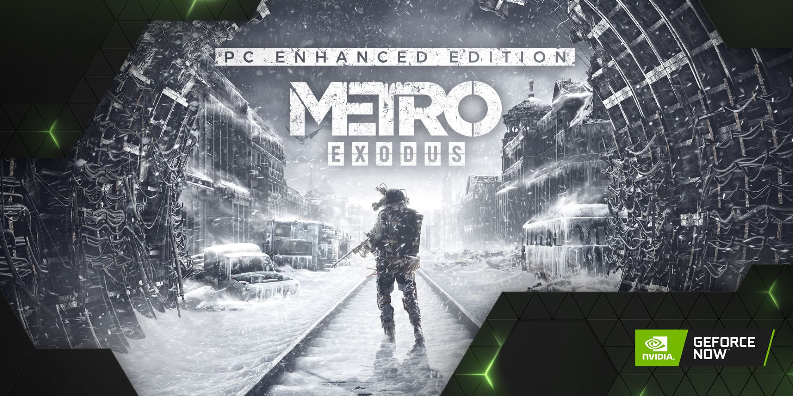

《戰慄深隧：流亡》PC 強化版已於台灣大哥大GeForce NOW 開放串流，《Iron Harvest》DLC 則會稍後於本月開放串流 
捕捉更多光線
《戰慄深隧：流亡》是首款加入台灣大哥大GeForce NOW 的 RTX 遊戲，且仍是這項服務中最多人遊玩的其中一款 RTX 遊戲。2 月時，開發商 4A Games 分享了即將發行 PC 強化版的新消息，且強化版採用全新完全光線追蹤的光線流程。
現在，我們可以宣佈強化版已於 5 月 6 日於台灣大哥大GeForce NOW 上同步發行。
PC 強化版的特點是對於《戰慄深隧：流亡》的即時光線追蹤技術提供重大更新。
玩家將能看到主遊戲採用突破性光線追蹤全域照明 (RTGI) 的改良功能，以及「上校雙雄 (The Two Colonels)」資料片中首創的光線追蹤自發光光線技術的全新更新。
PC 強化版也包含進階光線追蹤反射等其他的光線追蹤功能，並支援 NVIDIA 硬體上的 DLSS 2.0，包括 GeForce NOW。
PC 強化版即將推出的 RTX 功能清單非常龐大：
- 完全光線追蹤，現在所有光源都會使用光線追蹤技術
- 新一代光線追蹤和雜訊消除技術
- 新一代的時間重建技術
- 每像素的光線追蹤全域照明
- 具有區域陰影的光線追蹤自發光表面
- 無限數量的光線追蹤光線邊界
- 大氣和透明表面接收光線追蹤的彈射光線
- 完全光線追蹤光線模型支援滲色，且適用於所有光源
- 進階光線追蹤反射
- DX12 Ultimate 支援 (包含 DXR 1.1 和可變速率著色)
- GPU FP16 支援與數千種最佳化著色器
- 支援 DLSS 2.0
- 主要遊戲選項新增 FOV (視野) 滑桿
簡而言之，遊戲畫面將會更加令人驚豔。不過可別忘了，如果要使用強化版視覺效果，你必須是 Premium白金會員。
還沒擁有《戰慄深隧：流亡》嗎？趕快前往Steam或是 Epic Games Store取得遊戲吧！

策略性行動
經典的即時戰略遊戲《Iron Harvest》故事設定在 1920 年代的平行時空，提供史詩級單人作戰模式、多人遊戲與合作模式，將在 5 月 27 日推出全新 DLC。此次更新名為「獵鷹行動」，為遊戲中「第一次世界大戰：美國 (World War I: USA)」的平行世界版本帶來全新陣營。
你將透過七種全新單人模式的任務帶領這個全新陣營，同時學習如何在遊戲所有可玩的陣營中，運用全新的航空部隊，包括 Polania、Saxony 和 Rusviet。
「獵鷹行動」也將新增 RTS 粉絲會喜歡的全新多人地圖，新的「美國」作戰模式也可以與朋友合作遊玩。
《Iron Harvest》的「獵鷹行動」DLC 將於 GeForce NOW 同步發行。你可以在此深入瞭解更新內容。
我們可不是在自吹自擂
大方的 Deep Silver 團隊願意回答些我們對於這些重大更新的疑問。
Q：我們熱愛精美的光線追蹤 PC 遊戲，若從最低一分，到最高「真是美翻天了」來評分，《戰慄深隧：流亡》PC 強化版的效果有多好？
A：我們低調地對於《戰慄深隧：流亡》PC 強化版能得到「真是美翻天了」的最高分感到很有信心，這不是在自賣自誇，Digital Foundry 曾經說過：「《戰慄深隧：流亡》PC 強化版的全域照明技術能產生我所看過的電玩遊戲中最棒的光線，這點無庸置疑。」
Q：團隊運用 GeForce NOW 將全新的即時光線追蹤更新應用在《戰慄深隧：流亡》強化版中，會對玩家在裝置上遊玩時造成什麼影響？
A：我們相信硬體加速的光線追蹤 GPU 是未來趨勢，但現在使用支援光線追蹤的 GPU 玩家雖然有增加，在總 PC 玩家人數中仍佔很少的比例。GeForce NOW 將讓尚未升級遊戲硬體的玩家一窺未來樣貌。
Q：「獵鷹行動」會如何立基於《Iron Harvest》的故事情節？我們迫不及待想嘗試這個全新陣營了。
\
A：美國 Usonia 聯盟退出第一次世界大戰後，在不被歐洲的古老強國察覺下，成為了經濟與軍事強權。Usonia 陣營十分仰賴強大的「Diesel Birds」，因此為《Iron Harvest》戰場帶來更多樣的可能性。
為各陣營加入新建築與新單位，將能擴大《Iron Harvest》的名單，為玩家提供更多選擇，找出完美的攻擊和防禦策略。
Q：您對於 GeForce NOW 拓展可遊玩《戰慄深隧：流亡》和《Iron Harvest》的玩家受眾這點有什麼看法？
A：我們致力於在不影響體驗品質的情況下，盡可能將《戰慄深隧：流亡》的遊戲體驗帶到多個平台上；GeForce NOW 讓玩家無論使用何種硬體設定，都可以遊玩我們《戰慄深隧：流亡》最先進的光線追蹤版本。
Q：是否還有其他內容想要與正在串流《戰慄深隧：流亡》和《Iron Harvest》的粉絲分享？
A：小心會有突發驚嚇場景。警告過你了哦。
本週的GFN
除了關注兩則 Deep Silver 發佈的消息之外，還有更多的優質遊戲份量。
- 《R-Type Final 2》( Steam )
- 《中國式家長》( Chinese Parents )( Steam )
- 《暗黑血統 2：終結版》( Darksiders II Deathinitive Edition )( Epic Games Store )
- 《納厄白的地牢：混沌護身符》( The Dungeon Of Naheulbeuk: The Amulet Of Chaos )( Epic Games Store )
- 《GoNNER》( Epic Games Store )
- 《SOMA》( Epic Games Store )
- 《Yooka-Laylee and the Impossible Lair》( )( Epic Games Store )
越來越期待《戰慄深隧：流亡》中更多精美的光線追蹤畫面了嗎？等不及要開始「獵鷹行動」了嗎？ 讓GeForce NOW 支援你一起大肆暢玩！
快來加入 台灣大哥大 GeForce NOW 臉書粉絲團 ，掌握最新消息和更多活動資訊！